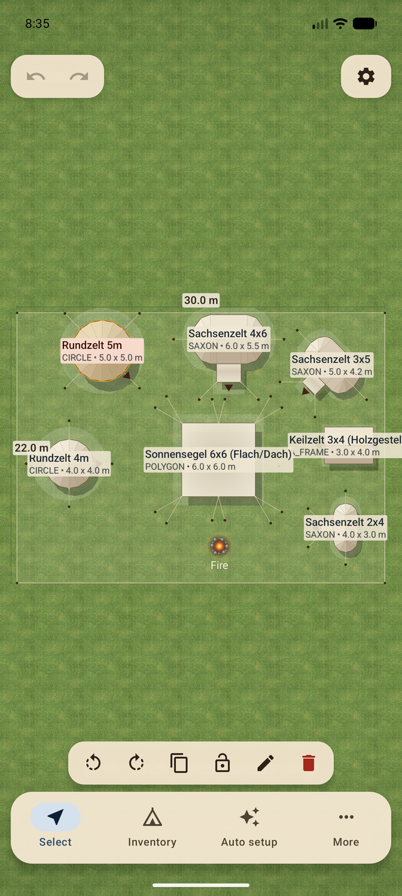
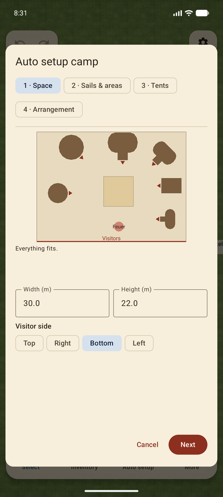

Plane dein Lager, bevor du ankommst
Stell Sachsenzelte, Rundzelte, Firstzelte und Sonnensegel maßstabsgetreu auf deine Fläche. Du siehst sofort, wo sich Abspannleinen kreuzen oder ein Eingang zugestellt ist – oder lass die Auto-Aufstellung das ganze Lager für dich entwerfen. Für Android und den Rechner (Windows, macOS, Linux).
Herunterladen Quellcode auf GitHub
Funktionen
Maßstabsgetreu planen
- Flächengröße in Metern, mit Messwerkzeug für Abstände.
- 28 Vorlagen für Zelte und Sonnensegel, durchsuch- und filterbar. Einfach auf die Fläche ziehen.
- Zelte verschieben, drehen, duplizieren, gruppieren und sperren. Rückgängig und Wiederholen für jeden Schritt.
Echte Zelte, echte Leinen
- Jedes Zelt hat Abspannleinen und einen Eingang. Länge, Winkel und Ankerpunkt sind einstellbar, Leinen lassen sich hinzufügen und entfernen.
- Draufsicht-Grafiken für Zelte, Sonnensegel und Feuerstellen auf Wiesenhintergrund.
Prüfung beim Planen
- Zelte oder Leinen, die in andere Zelte ragen, werden rot markiert.
- Zugestellte Eingänge und zu schmale Wege werden orange markiert.
- Eigene Sperrflächen zeichnen, etwa für Bäume, Wege oder den Platz der Nachbarn.
Auto-Aufstellung
- Fläche, Besucherseite, Sonnensegel, Feuerstelle und Zelte angeben – sie entwirft das Lager: Hufeisen, Kreis, U-Form, am Rand entlang oder verteilt.
- Live-Vorschau. Passt nicht alles, werden Wege schmaler und sie sagt dir, welche Zelte weggelassen wurden.
Teilen
- Export als PNG oder als Projektdatei für ein anderes Gerät.
- Deutsch und Englisch, helles und dunkles Design, Tastenkürzel am Rechner.
Auto-Aufstellung

Auf dem Handy

